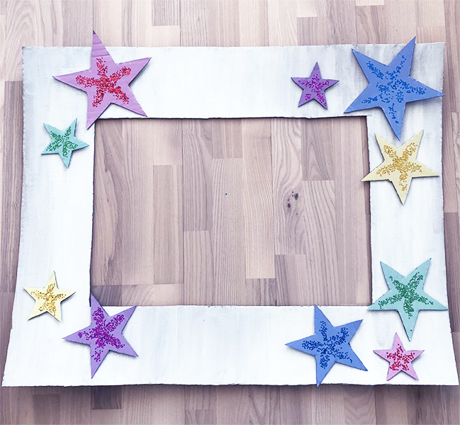

Lav din egen selfieramme:
Alt du skal bruge:
Stort stykke tykt pap (gerne fra en papkasse)
Malling
Lim
Glimmmer (eller hvad du kunne tænke dig at tilføje til din ramme)
Du kan nemt og billigt pifte din fest op, med sjov underholdningi form af
en personlig selfieramme - forhåbentligt vil rammen være med til,
at skabe sjove minder sammen med dine gæster!
Stort stykke tykt pap (gerne fra en papkasse)
Malling
Lim
Glimmmer (eller hvad du kunne tænke dig at tilføje til din ramme)
1. Lave en stor ramme ud at det store stykke pap, mål ca. 65x90cm
(så er der plads til et ansigt eller flere)
2. Mal rammen den farve som du ønsker (lad det tørre)
3. Skriv den tekst som du ønsker fx ÅRETS FEST eller GODT NYTÅR
4. Lav de elementer du ønsker i pap fx blomster, balloner, stjerner eller noget som symboler dig eller temaet til din fest
5. Til slut, lim det hele sammen og lad det helst tørre natten over
TIP 1: Køb evt. noget flot gavepapir og klister op på væggen som baggrund til dit billede.
TIP 2: Køb evt. nogle sjove masker eller briller som dine gæster kan tage på, når billedet bliver taget. Og hvis du vil have ekstra plus point på kontoen, kan du lave dine egne sjove masker.
PDF: Download guiden og indkøbslisten her